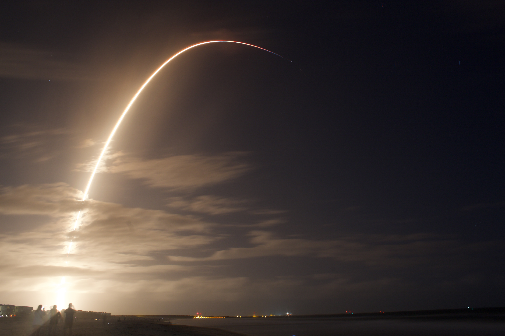

Photography has been a long-time hobby of mine. I don't pretend to be good, but I do enjoy it whenever the inspiration hits me.
Here are some of my favorite shots from over the years. Some files are fairly large so they may take a second to load.
EmilyTaylorBrenna
Manhattan at dusk. This was my first attempt at a panorama; I think it came out pretty good.
Charlotte. The sky stitching didn't come out great but I didn't like this shot enough to fix it.
HunterAlso Hunter

SpaceX Falcon 9 launch seen from Cocoa Beach, Florida.
Orion Nebula, taken by inserting the camera into a telescope.Total Lunar eclipse